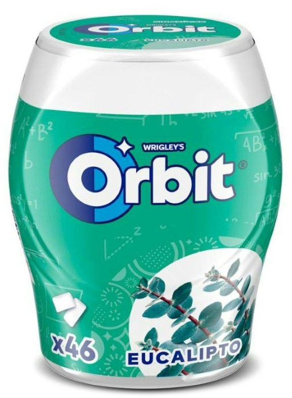
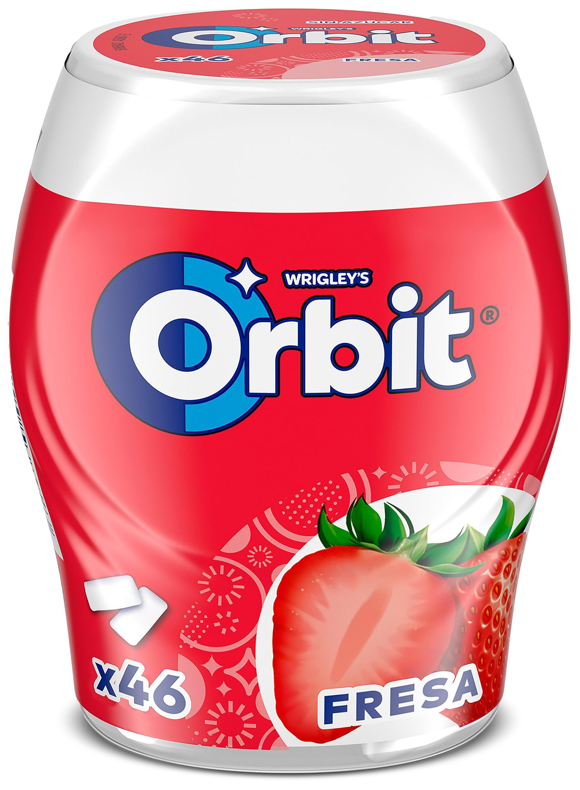
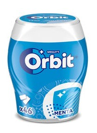
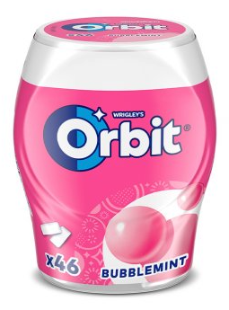

Out2_4.png — The reference image that defines the target visual theme.
This chapter demonstrates how the system can apply a consistent visual theme across multiple different product photos. Given a set of product images and a reference themed output, the system generates new backgrounds for each product that share the same cohesive style.

Orbit1.jpg

Orbit2.jpg

Orbit3.jpg

Orbit4.png
Out2_4.png — The reference image that defines the target visual theme.

Out3_1.png — Orbit1 with themed background.

Out3_2.png — Orbit2 with themed background.

Out3_3.png — Orbit3 with themed background.

Out3_4.png — Orbit4 with themed background.
Orbit1.jpg – Orbit4.jpg) along with a themed reference image (Out2_4.png).Out3_1.png – Out3_4.png) is produced, all sharing a cohesive visual identity.